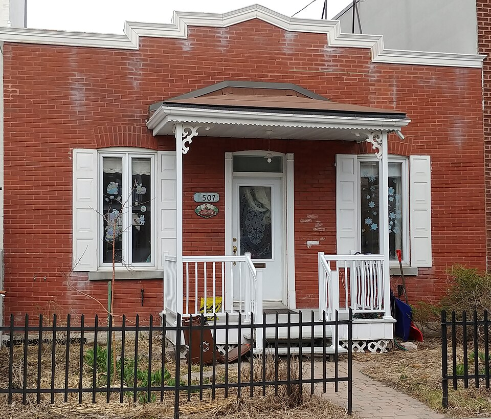
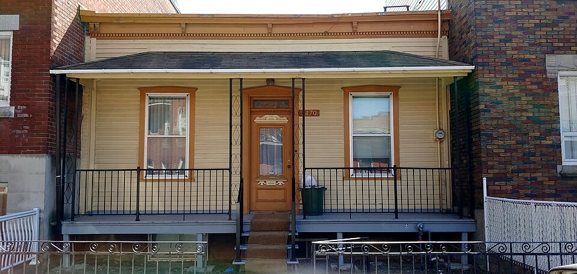

Shoebox of the early 20th century Shoebox du début du 20e siècle

"Maison shoebox à Montréal 08" by Guerinf, 8 April 2020, Wikimedia Commons, licensed CC BY-SA 4.0 (Creative Commons Attribution-ShareAlike 4.0 International) — author, licence and file URL read individually on the Commons API before download. File: https://commons.wikimedia.org/wiki/File:Maison_shoebox_%C3%A0_Montr%C3%A9al_08.jpg

"Maison de style shoebox à Montréal 09" by Guerinf, 7 April 2020, Wikimedia Commons, licensed CC BY-SA 4.0 (Creative Commons Attribution-ShareAlike 4.0 International) — author, licence and file URL read individually on the Commons API before download. File: https://commons.wikimedia.org/wiki/File:Maison_de_style_shoebox_%C3%A0_Montr%C3%A9al_09.jpg
A single-storey brick box on a lot deeper than it is wide, set end-on and close to the street with the yard behind, its door in the middle and one tall window either side, and a cornice or a pedimented parapet raising the front above the flat roof. Built cheaply from what was to hand between 1900 and 1940, mostly in Villeray and Parc-Extension, and built to be built over later.
The shoebox is the one self-built type on this site, and this is one of three records for it — with Rosemont–La Petite-Patrie's single type and with fiche 1.3 next door. The scholarly account is Guy Gaudreau, "Les premières maisons shoebox montréalaises de Rosemont et de Villeray" (Revue d'histoire urbaine / Urban History Review, DOI 10.3138/uhr-2020-0004), which pairs the same two boroughs this site now pairs. What is distinctive here is that the by-law does not simply describe the type: it regulates it, giving it three lettered variants and a table of permitted original and replacement components running to three further pages.
| Tenure / plan | single-family |
|---|---|
| Storeys | 1 |
| Roof form | flat |
| Roof pitch | – |
| Window proportion | vertical |
| Principal cladding | clay-brick, wood-clapboard |
| Roofing | – |
| Garage | none |
| Lot width | – |
| Front setback | – |
| Side setback | – |
| Front yard green | – |
What Règlement 01-283-124 says about this type
- L’appellation shoebox renvoie à la volumétrie rectangulaire de ces maisons qui évoque une boîte à chaussures. La première phase de développement de cette typologie s’étend des années 1900 à 1940. Ce sont des constructions simples, réalisées à faible coût à partir des matériaux disponibles à l’époque. Ces constructions s’insèrent dans la trame urbaine aux côtés de duplex et de triplex. On les trouve principalement dans Villeray et Parc-Extension.
- Generally contiguous with its neighbours, but it may also be detached or semi-detached.
- Built on a rectangular lot deeper than it is wide, close to the street so as to leave room for a back yard — the siting rule that makes the type read end-on to the street.
- Variant A inverts it and stands at the back of the lot with little or no rear margin.
- La shoebox est généralement implantée en contiguïté avec les bâtiments voisins, mais elle peut aussi être isolée ou jumelée. Elle est construite sur un lot rectangulaire, plus profond que large, à proximité de la rue pour permettre l’aménagement d’une cour arrière.
- A single-storey flat-roofed building on a rectangular plan of modest dimensions.
- The ground floor is slightly raised above street level; the cellar is usually no more than a crawl space.
- A projecting volume is sometimes present on the façade.
- Il s’agit d’un bâtiment d’un seul étage à toit plat, au plan rectangulaire de dimensions modestes. Le rez-de-chaussée est légèrement surélevé par rapport à la rue. Le sous-sol est habituellement constitué d’un vide sanitaire. Parfois, un volume en avancée est présent en façade.
- The façade composition is generally symmetrical.
- The front door is reached by a perron, sometimes sheltered by a marquise.
- A cornice, or a parapet with a pediment, usually crowns the building, and the brickwork often carries ornament.
- La composition de la façade de la maison est généralement symétrique : deux fenêtres sont disposées de part et d’autre de la porte d’entrée centrale. […] La porte d’entrée est accessible par un perron, parfois couvert d’un auvent. Le parement de brique du bâtiment présente souvent de l’ornementation et une corniche ou un parapet à fronton couronne généralement le bâtiment.
- Two windows disposed either side of a central door.
- Windows of vertical proportion.
- Les fenêtres sont de proportions verticales.
- Brick, usually, with ornament worked into the cladding.
- Variant C substitutes a light cladding, and may then be either plain or more ornamented than the brick version — cornice, window architraves, a wide covered gallery.
- A — SHOEBOX IMPLANTÉE EN FOND DE LOT. La particularité de cette shoebox est qu’elle est construite en fond de lot, avec peu ou pas de marge arrière.
- B — SHOEBOX AVEC PORTE D’ENTRÉE SITUÉE PRÈS D’UN MUR LATÉRAL. Cette shoebox présente une volumétrie plus étroite. La porte d’entrée est située près d’un mur latéral.
- C — SHOEBOX À PAREMENT LÉGER. Cette shoebox arbore un revêtement léger. Elle peut se présenter sous une apparence modeste, sans ornementation et couronnement ou, à l’inverse, être plus ornementée et comporter une corniche, des chambranles autour de ses ouvertures, une grande galerie couverte, etc.
<strong>This record and the next are the two halves of one argument.</strong> This borough splits the shoebox into two numbered types where Rosemont–La Petite-Patrie treats it as a single type; the disagreement is set out in full in the notes on the place page. Fiche 1.2 is the early half — « La première phase de développement de cette typologie s'étend des années 1900 à 1940 » — and it is the half the fiche localises: « On les trouve principalement dans Villeray et Parc-Extension. » The <code>count_in_place</code> of 424 is derived, not printed: the borough's 2019 guide counts 1 159 shoebox houses by decade, and 424 of them fall in the decades 1900-1909 through 1930-1939, which is this fiche's own 1900-1940 range. The remaining 735 fall in 1940-1949 and 1950-1960 and are counted on fiche 1.3. Both figures are sums over the guide's table; neither is a number the borough itself prints, and a reader who wants a published figure should use the total of 1 159.
- A — Shoebox implantée en fond de lot : La particularité de cette shoebox est qu’elle est construite en fond de lot, avec peu ou pas de marge arrière.
- B — Shoebox avec porte d’entrée située près d’un mur latéral : Cette shoebox présente une volumétrie plus étroite. La porte d’entrée est située près d’un mur latéral.
- C — Shoebox à parement léger : Cette shoebox arbore un revêtement léger. Elle peut se présenter sous une apparence modeste, sans ornementation et couronnement ou, à l’inverse, être plus ornementée et comporter une corniche, des chambranles autour de ses ouvertures, une grande galerie couverte, etc.
Same word elsewhere
- Maison shoebox (Rosemont–La Petite-Patrie (borough of Montréal))
- Shoebox of the mid-20th century (Villeray–Saint-Michel–Parc-Extension)
Same form elsewhere
- Small one-storey brick house, wider than deep, with a crown (Lachine (borough of Montréal))
- Maison shoebox (Rosemont–La Petite-Patrie (borough of Montréal))
- Shoebox of the mid-20th century (Villeray–Saint-Michel–Parc-Extension)
Same period elsewhere
- Family A company houses (models A1–A8) (Arvida (borough of Jonquière, Saguenay))
- Family B company houses (models B1–B4) (Arvida (borough of Jonquière, Saguenay))
- Family C company houses (models C1–C6) (Arvida (borough of Jonquière, Saguenay))
- Family D company houses (models D1–D5) (Arvida (borough of Jonquière, Saguenay))
- Family M houses (models M1–M11), regionalist neo-vernacular (Arvida (borough of Jonquière, Saguenay))
- Family F semi-detached houses (models F1–F18) (Arvida (borough of Jonquière, Saguenay))
- Families P, Q, S and T (paired and single models along boulevard du Saguenay and rues Powell, Neilson, Berthier, Parks, Joule) (Arvida (borough of Jonquière, Saguenay))
- Family R row houses (models R2–R4) (Arvida (borough of Jonquière, Saguenay))
- Families E, G, H, J, K, L, N, Y and Z (Arvida (borough of Jonquière, Saguenay))
- Wartime Housing Ltd. houses (Arvida (borough of Jonquière, Saguenay))
- Postwar bungalow (Baie-D'Urfé)
- Mansard house (Charlesbourg (Trait-Carré))
- Boomtown building (Charlesbourg (Trait-Carré))
- Cubic house (Four Square) (Charlesbourg (Trait-Carré))
- Industrial vernacular house (Charlesbourg (Trait-Carré))
- Vernacular cottage (Charlesbourg (Trait-Carré))
- Post-war residence (bungalow) (Charlesbourg (Trait-Carré))
- English summer villa on the lake shore (Dorval)
- Postwar bungalow (Dorval)
- Mixed-use building with a flat roof (édifice mixte à toit plat) (Gatineau)
- First-generation North American bungalow (bungalow nord-américain de première génération) (Gatineau)
- Side-gable duplex (duplex à mur pignon latéral) (Gatineau)
- Complex gabled-roof house (maison à toit complexe à pignon) (Gatineau)
- Brick matchbox house, two to two and a half storeys (maison allumette en brique de deux à deux étages et demi) (Gatineau)
- Cubic house (maison cubique) (Gatineau)
- CIP executive's house (maison de cadre de la CIP) (Gatineau)
- Flat-roofed wood house (maison en bois à toit plat) (Gatineau)
- Flat-roofed brick house (maison en brique à toit plat) (Gatineau)
- English-revival stone house (Hampstead)
- Postwar detached house (Hampstead)
- American vernacular cottage (Île d'Orléans)
- Arts and Crafts architecture (Île d'Orléans)
- Boomtown house (Île d'Orléans)
- Cubic house (Four Square) (Île d'Orléans)
- Modernism (Île d'Orléans)
- Québec regionalism (Île d'Orléans)
- Postwar bungalow (Lachine (borough of Montréal))
- Bourgeois brick house in the Victorian taste (Lachine (borough of Montréal))
- Brick duplex and triplex, detached or in continuous alignment (Lachine (borough of Montréal))
- Small one-storey brick house, wider than deep, with a crown (Lachine (borough of Montréal))
- The maison « Gameroff » — contractor-built house of the 1950s–1970s quarters (Lachine (borough of Montréal))
- Beaux-Arts house (Lévis)
- Boomtown house (Lévis)
- Cubic house (maison cubique) (Lévis)
- Flat-roofed house (Lévis)
- Arts & Crafts house (Arts & métiers) (Lévis)
- Wartime housing dwelling (Lévis)
- Modernist building (Lévis)
- Bourgeois residence of the cité, Beaux-Arts (Mercier–Hochelaga-Maisonneuve (borough of Montréal))
- Shop-and-dwellings block on the commercial artery (Mercier–Hochelaga-Maisonneuve (borough of Montréal))
- Three-storey workers' plex (Mercier–Hochelaga-Maisonneuve (borough of Montréal))
- Brick bungalow of the 1950s Mercier developments (Mercier–Hochelaga-Maisonneuve (borough of Montréal))
- Veterans' house, to the Wartime Housing Limited model (Mercier–Hochelaga-Maisonneuve (borough of Montréal))
- Garden City House (Town of Mount Royal)
- Faubourg House (Town of Mount Royal)
- Faubourg Apartment Block (Town of Mount Royal)
- Canadian House (Town of Mount Royal)
- New England House (Town of Mount Royal)
- New England Apartment Block (Town of Mount Royal)
- Georgian House (Town of Mount Royal)
- English Manor House (Town of Mount Royal)
- Semi-detached single-family house (Outremont (borough of Montréal))
- Semi-detached duplex (Outremont (borough of Montréal))
- Detached single-family house (Outremont (borough of Montréal))
- Opulent detached residence (Outremont (borough of Montréal))
- Apartment building (conciergerie) (Outremont (borough of Montréal))
- Modern house on the flank (Outremont (borough of Montréal))
- Duplex without front setback (Le Plateau-Mont-Royal (borough of Montréal))
- Duplex with front setback (Le Plateau-Mont-Royal (borough of Montréal))
- Duplex with exterior stair (Le Plateau-Mont-Royal (borough of Montréal))
- Triplex with interior stair (Le Plateau-Mont-Royal (borough of Montréal))
- Triplex with exterior stair (Le Plateau-Mont-Royal (borough of Montréal))
- Multiplex (Le Plateau-Mont-Royal (borough of Montréal))
- Row urban house (Le Plateau-Mont-Royal (borough of Montréal))
- Apartment block without courtyard (Le Plateau-Mont-Royal (borough of Montréal))
- Apartment block with courtyard (Le Plateau-Mont-Royal (borough of Montréal))
- Small apartment building (Le Plateau-Mont-Royal (borough of Montréal))
- Postwar bungalow (Pointe-Claire)
- Cubique — massive symmetrical block, imposing gallery, low hipped roof (Pointe-Claire)
- Village Boomtown house, two storeys, flat or low-pitch roof behind a crown (Pointe-Claire)
- Veterans' house on the Wartime Housing Limited model, c. 1947 (Pointe-Claire)
- Boomtown house and shop-house (Québec City)
- Cubic house (Four Square) (Québec City)
- Flat-roofed faubourg house (Québec City)
- Industrial-vernacular cottage (Québec City)
- Neo-Queen Anne house (Québec City)
- Neo-Renaissance house and mixed-use block (Québec City)
- Neo-Tudor house (Québec City)
- Plex — superposed dwellings (Québec City)
- Apartment block with a central stairwell (Québec City)
- Arts and Crafts house (Québec City)
- Bungalow (Québec City)
- Camp and villégiature chalet (Québec City)
- Dutch Colonial Revival house (Québec City)
- International Style house (residential) (Québec City)
- Neo-Georgian house (Québec City)
- Prairie house (Frank Lloyd Wright inspiration) (Québec City)
- Wartime Housing house (Cape Cod) (Québec City)
- Maison shoebox (Rosemont–La Petite-Patrie (borough of Montréal))
- Triplex with exterior stair (Rosemont–La Petite-Patrie (borough of Montréal))
- Duplex with exterior stair (Rosemont–La Petite-Patrie (borough of Montréal))
- Duplex with interior stair and paired entrances (Rosemont–La Petite-Patrie (borough of Montréal))
- Detached house of the Cité-Jardin du Tricentenaire (Rosemont–La Petite-Patrie (borough of Montréal))
- Semi-detached duplex with rear garage, Art déco manner (Rosemont–La Petite-Patrie (borough of Montréal))
- Conciergerie (Rosemont–La Petite-Patrie (borough of Montréal))
- Mansard-roofed house of Second Empire influence (Saint-Lambert)
- Queen Anne style house (Saint-Lambert)
- Boomtown house with false mansard (Saint-Lambert)
- Boomtown house with crown (parapet or cornice) (Saint-Lambert)
- Cubic (Four Square) house (Saint-Lambert)
- House of Arts and Crafts influence (Saint-Lambert)
- Multi-dwelling building of plex type (Saint-Lambert)
- The "King Cottage" (Saint-Lambert)
- The modern house (including the bungalow) (Saint-Lambert)
- Two-storey clapboard village house of the îlot villageois (Sainte-Anne-de-Bellevue)
- Garden City Press workers' house (Sainte-Anne-de-Bellevue)
- Postwar bungalow (Sainte-Anne-de-Bellevue)
- English summer villa on the lake shore (Senneville)
- Arts and Crafts country estate (Senneville)
- Postwar bungalow (Senneville)
- Boomtown house (Le Sud-Ouest (Montréal))
- Duplex with interior stair (Le Sud-Ouest (Montréal))
- Three-storey duplex (Le Sud-Ouest (Montréal))
- Triplex with interior stair (Le Sud-Ouest (Montréal))
- Urban house (Le Sud-Ouest (Montréal))
- Apartment house (Le Sud-Ouest (Montréal))
- Duplex with exterior stair (Le Sud-Ouest (Montréal))
- Multiplex (Le Sud-Ouest (Montréal))
- Raised duplex (Le Sud-Ouest (Montréal))
- Triplex with exterior stair (Le Sud-Ouest (Montréal))
- Apartment building (lift-served) (Le Sud-Ouest (Montréal))
- Conciergerie (walk-up apartment block) (Le Sud-Ouest (Montréal))
- Town house (post-1960 project housing) (Le Sud-Ouest (Montréal))
- Veterans' house (Le Sud-Ouest (Montréal))
- Lower-town company house (Ross and Macdonald, 1918–1923) (Témiscaming)
- Upper-district company house (Somerville, 1925–1950) (Témiscaming)
- Well-to-do bourgeois house in stone and brick (maison cossue) (Trois-Rivières)
- The 1908 reconstruction block — brick, flat-roofed, built all at once (Trois-Rivières)
- Boomtown house (Trois-Rivières)
- Immeuble à logements — the plex of superposed flats (Trois-Rivières)
- Cubic house (Four-square) (Trois-Rivières)
- Arts & Crafts house (Trois-Rivières)
- Three-storey plex with exterior stair (Verdun (borough of Montréal))
- Two semi-detached duplexes, or a three-dwelling building, with deep front balconies (Verdun (borough of Montréal))
- Three-storey commercial block with dwellings above and alcove balconies (Verdun (borough of Montréal))
- National Housing Act house — 1½ storeys, brick, to prize-winning plans (Verdun (borough of Montréal))
- Residential tower, île des Sœurs (Verdun (borough of Montréal))
- Row duplex of the 1950s (Verdun (borough of Montréal))
- Freestanding greystone mansion (Ville-Marie (Montréal))
- Greystone terrace (Ville-Marie (Montréal))
- Semi-detached brick house (Westmount)
- Eclectic prestige house of the summit (Westmount)
- Tudor Revival house (Westmount)
- Arts and Crafts semi-detached house (Westmount)
- Interwar apartment house (Westmount)
- Modernist residential tower (Westmount)
Same style elsewhere
- Boomtown building (Charlesbourg (Trait-Carré))
- Cubic house (Four Square) (Charlesbourg (Trait-Carré))
- Industrial vernacular house (Charlesbourg (Trait-Carré))
- Vernacular cottage (Charlesbourg (Trait-Carré))
- Side-gable duplex (duplex à mur pignon latéral) (Gatineau)
- One-and-a-half-storey wooden matchstick house (maison allumette en bois d'un étage et demi) (Gatineau)
- Wood matchstick house of two to two and a half storeys (maison allumette en bois de deux à deux étages et demi) (Gatineau)
- Brick matchbox house, two to two and a half storeys (maison allumette en brique de deux à deux étages et demi) (Gatineau)
- American vernacular cottage (Île d'Orléans)
- American vernacular house (Lévis)
- Flat-roofed house (Lévis)
- Boomtown house and shop-house (Québec City)
- Flat-roofed faubourg house (Québec City)
- Industrial-vernacular cottage (Québec City)
- Plex — superposed dwellings (Québec City)
- Camp and villégiature chalet (Québec City)
- Maison shoebox (Rosemont–La Petite-Patrie (borough of Montréal))
- Boomtown house (Le Sud-Ouest (Montréal))
- Boomtown house (Trois-Rivières)
- Immeuble à logements — the plex of superposed flats (Trois-Rivières)
- Cubic house (Four-square) (Trois-Rivières)
- Boomtown house (Villeray–Saint-Michel–Parc-Extension)
- Shoebox of the mid-20th century (Villeray–Saint-Michel–Parc-Extension)